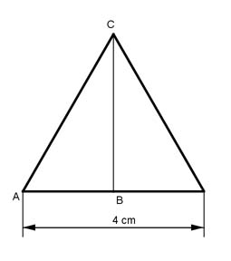

Aufgabe 104 Ein Dreikantstahl hat als Grundfläche ein gleichseitiges Dreieck mit einer Seitenlänge von 4 cm und ein Volumen von 700 cm3. Durch Auswalzen soll eine Seitenlänge auf 2,8 cm erzielt werden. Wie lang ist der Stahl vor und nach dem Auswalzen?

Satz von Pythagoras im Dreieck ABC: AB = 4 cm/2 = 2 cm AC2 = AB2 + BC2 |-AB2 BC2 = AC2 - AB2 = 42 cm2 - 22 cm2 = 12 cm2 |√ BC = 3,46 cm = hDreieck V = G * lvorher 4 cm * 3,46 cm V = ----------------- * lvorher = 2 = 6,92 * lvorher cm3 | :9,94 700 lvorher = ------- cm = 101 cm 6,92 Satz von Pythagoras im neuen Dreieck ABC: AB = 2,8 cm/2 = 1,4 cm AC2 = AB2 + BC2 |-AB2 BC2 = AC2 - AB2 = = 2,82 cm2 - 1,42 cm2 = 5,88 cm2 |√ BC = 2,425 cm = hDreieckneu V = G * ldanach 2,8 cm * 2,425 cm V = --------------------- * ldanach = 2 = 3,395 * ldanach cm3 |:3,395 700 ldanach = -------- cm = 206,2 cm 3,395